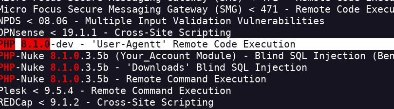
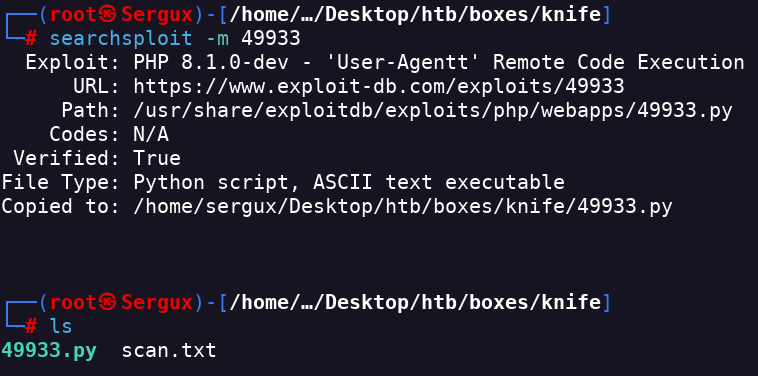
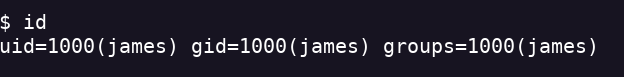
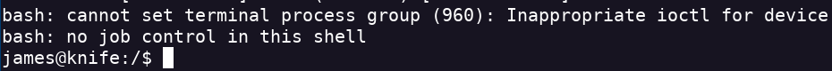

I start by performing a port scan against the target machine to identify exposed services.
The scan reveals that the SSH and HTTP services are running. Since SSH is generally well secured, I decide to focus my attack on the web service.
I add the target IP address to my /etc/hosts file
to avoid any resolution issues.
I inspect the website source code looking for potential clues, but nothing interesting is immediately visible.
To gather more information, I intercept the HTTP traffic using Burp Suite to analyze the server responses.
The same inspection can be done using a simple HTTP request with curl.
curl -X OPTIONS http://10.10.10.242 -iThe response reveals that the server is running PHP/8.1.0-dev, which immediately stands out as a potentially vulnerable development version.
I search for public exploits targeting this PHP version and find a known Remote Code Execution vulnerability.

I copy the exploit to my local directory and prepare it for execution.

After executing the exploit, I successfully access the system through the backdoor.
The shell reveals that I am logged in as the user james.

Due to shell limitations, I am unable to freely navigate through directories. However, I can still retrieve files by executing commands directly.
cat /home/james/user.txtWith the user flag obtained, I check which commands I can run with elevated privileges.
sudo -lThe output shows that the knife command can be executed as root without requiring a password.
Since I cannot spawn a proper TTY session, I use a PHP-based execution method through the knife command.
By abusing knife’s execution feature, I run a command as root and read the root flag.
sudo knife exec -E 'system("cat /root/root.txt")'